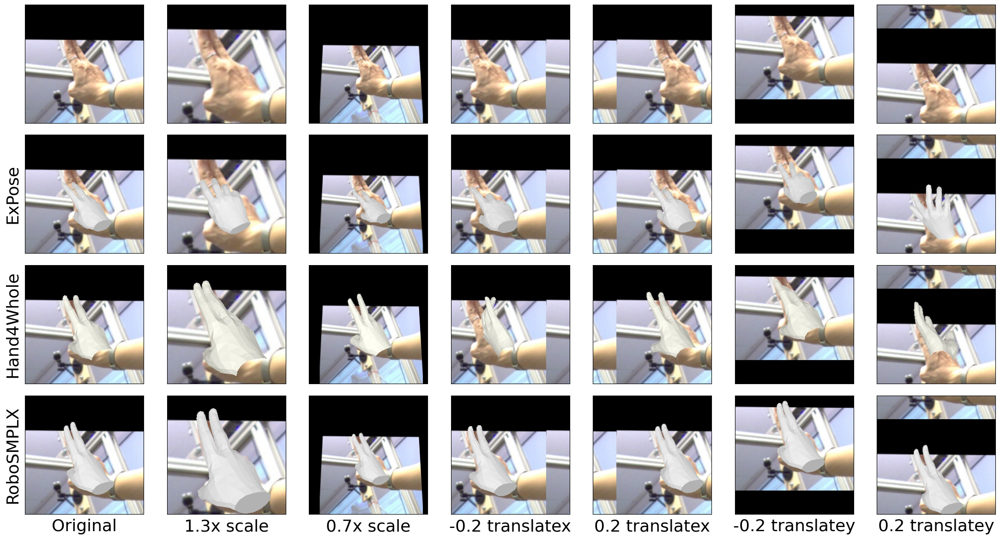
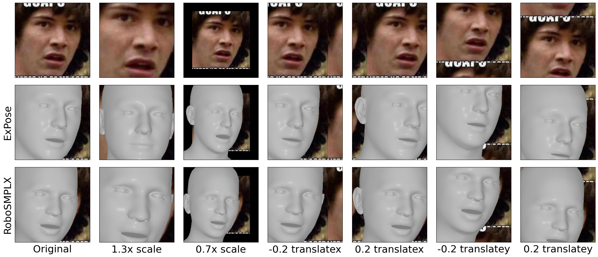
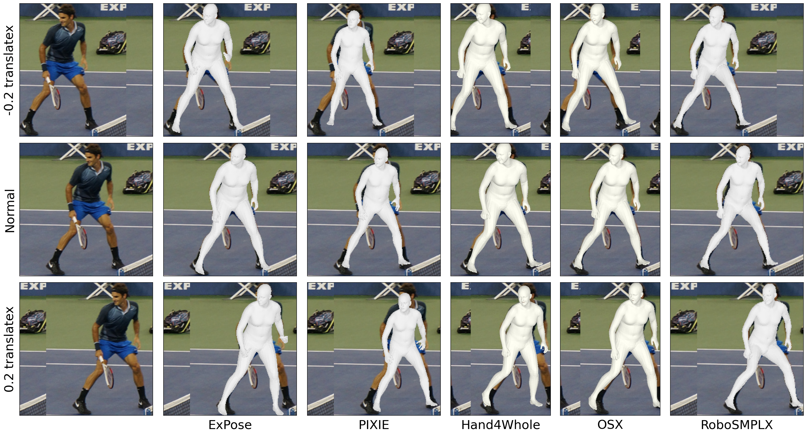

Qualitative Evaluation



Whole-body pose and shape estimation aims to jointly predict different behaviors (e.g., pose, hand gesture, facial expression) of the entire human body from a monocular image. Existing methods often exhibit degraded performance under the complexity of in-the-wild scenarios. We argue that the accuracy and reliability of these models are significantly affected by the quality of the predicted bounding box, e.g., the scale and alignment of body parts. The natural discrepancy between the ideal bounding box annotations and model detection results is particularly detrimental to the performance of whole-body pose and shape estimation. In this paper, we propose a novel framework RoboSMPLX to enhance the robustness of whole-body pose and shape estimation. RoboSMPLX incorporates three new modules to address the above challenges from three perspectives: 1) Localization Module enhances the model’s awareness of the subject’s location and semantics within the image space. 2) Contrastive Feature Extraction Module encourages the model to be invariant to robust augmentations by incorporating contrastive loss with dedicated positive samples. 3) Pixel Alignment Module ensures the reprojected mesh from the predicted camera and body model parameters are accurate and pixel-aligned. We perform comprehensive experiments to demonstrate the effectiveness of RoboSMPLX on body, hands, face and whole-body benchmarks.



@inproceedings{
title={Towards Robust and Expressive Whole-body Human Pose and Shape Estimation},
author={Pang, Hui En and Cai, Zhongang and Yang, Lei and Qingyi, Tao and Zhonghua, Wu and Zhang, Tianwei and Liu, Ziwei},
booktitle={NeurIPS},
year={2023}
}